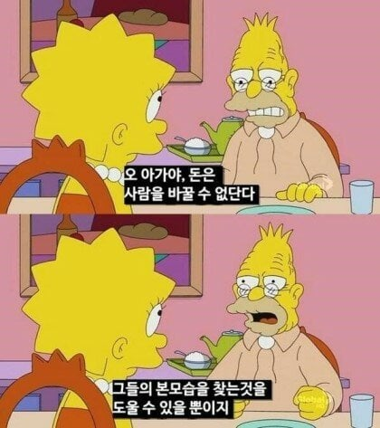

돈과 권력

돈과 권력
착한게 아니라 힘이 없어서 패악질을 못했던 경우가 많긴 할거야 가령 유대인이라던가
?? 유대인은 역사적으로 악질이었음...
2차 대전때 유대인 대학살이 착한 유대인을 이유없이 대학살한게 아님;;;
가장 돈이 많고 패악질이 심한 돈의 권력자집단이라 각잡고 대량학살한거고 사람들이 그래서 동조한거
소위 유대인 카르텔이 극성이었음 유대인은 집에서 놀기만 해도 유대인이 운영하는 은행에서 거액의 돈을 빌려 집을 장만할 수 있지만 다른 사람들은 고액 이자만 내야되는 등... 검색해보면 장난 아님 유대인 자신들은 선택받은 민족이라 세계의 귀족으로 구분하고 다른 인종은 전부 노예로 구분해서 운영했음, 돈은 다른 인종을 통해 벌고 자신들은 이자없이 돈을 공유하며 보조하는 식 혈연의 끝판왕을 보여준 민족임
산업혁명때부터 광산, 벌목 등 생산 노동자들에게 봉급을 회사 자체발행 토큰으로 지급하며 착취하던것도 유대인
어린아이를 공장 노동에 투입시킨것도 유대인
단지 히틀러라는 희대의 살인광이 대량학살한 바람에 미화된거
둘이 같은말을 하고 있는뎁쇼...
아 아침이라 잘모본듯
몰랐던거 알게됨
실제 2차 대전은 유대인의 패악질로 벌어졌고 유대인의 자금으로 이긴 전쟁임
전쟁에서 이긴 "미국의 무한한 돈 러쉬"가 유대인 자금 비중이 굉장히 높았다지
회사에서 코곤거 맞네
ㅋㅋㅋㅋㅋㅋㅋㅋㅋㅋ
지금도 저 지랄 하는 것이 문제임.
울 회사는 유럽뿐 아니라 이스라엘 애들이랑 파트너 관계임
이스라엘 민족이 어떤지, 난 쉽게 이야기 해 줄 수 있는데 우리나라 지역 문제 때문에
ㅋㅋ 못하지만 ㅋㅋ 완전 판박이 수준임...
ㅅㅂ것들이 처음에는 졸라 착한 척 하고 인자한 척 하다가 지들이 주도권 잡는 순간 개 지랄 시전하고,
무조건 지들이 피해 받았다고 법적으로 분쟁일으키고, ㅋㅋ 그냥 꽁으로 처 먹으려고 하는 짓거리가.
딱 거기 ~~ 아니다. ㅋㅋ여기까지
OO도를 왜 말을못해
해봐라 발작 하는 새끼들 졸라 튀어 나오지 ㅋㅋ
제발 제 본모습을 찾을수 있게 로또 1등 좀 ㅠ
뭔일 있었음?
비슷한 역할을 하는 것 : 완장
돈이 있을때 착해지는 사람이 착한걸까 돈이 없을때 착해지는 사람이 착한걸까
일단 착하다는게 중요한거 같음
오...
착해진다는 말이 오류인 거지
그럴듯하게 말하지만 사실 바뀌었다는 것만 알 수 있지 그게 본모습이 드러난건지 진짜 바뀐건지는 모르지 ㅋㅋ
대부분 추악한쪽
다 틀렸음.. 가챠 돌리는거랑 비슷한거임
돈으로 인간이 변화하는 과정에서 자신의 본성을 뽑을 수도 있지만 그렇지 않을 수도 있는거임
그래서 왜 돈 안줌? 급함
돈은 세상 자유이용권이라ㅋㅋ 그래서 돈없으면 착한 사람도 나쁜행동할 때가 있고 나쁜 사람은 어거지로 세상에 맞춰서 착하게 살아야됨. 돈많아지면 자기 본성대로 살 수 있는 거고